本文看点
01
46万篇软文喂给AI
02
9个AI助手全部引用
03
账号中位数仅9个粉丝
01
PAPER INFO
论文信息
【论文题目】GEOHunter: Mapping a Generative Engine Optimization Network in the Wild
【论文链接】https://arxiv.org/abs/2611.26564
【作者团队】加州大学洛杉矶分校（UCLA）、佐治亚理工学院
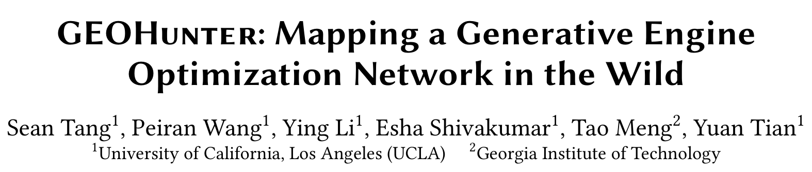
— 论文题头
本文来自 UCLA 和佐治亚理工的研究团队，2026 年 11 月 19 日挂上 arXiv。这是一篇实测类论文：不做实验室里的攻击演示，而是把一个正在运营的商业 GEO 服务从发文账号一路追到 AI 助手的回答里。作者承诺开源两个工具和脱敏后的数据集。
02
OVERVIEW
导读
你问 AI 助手"哪个牌子的公路车值得买"，它给出一个排名，还附上几条参考链接。这个排名是怎么来的？
带联网搜索的 AI 助手并不自己判断哪个牌子好。它先检索一批网页，再把网页内容综合成一个答案。所以答案说什么，取决于它检索到了哪些网页。GEO（生成式引擎优化）服务卖的就是这一层影响力：服务商替付费客户写推广文章，通过自己控制的一批账号发到内容平台上，等着 AI 助手来检索。
以前的研究要么审计 AI 助手引用了哪些来源，但说不清这些内容是谁生产的；要么在实验室里证明精心改写的文本能提高产品排名，但没人观察过是否真有人在大规模这么做。这篇论文把两头接上了，核心结论有三条：
这张网络在三个平台上有 3755 个账号，其中分析了 1985 个账号的 466357 篇推广文章；
测试的 9 个中美 AI 助手全部引用了它的文章，可检索的引用页里 4.5% 到 20% 出自这张网络，取决于归因标准有多严；
这些账号在 B 站上的粉丝中位数只有 9 个。它们不靠读者，只靠被搜索引擎和 AI 助手检索到。
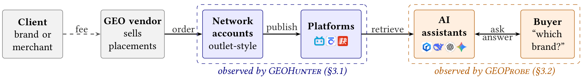
— 图1：论文测量的 GEO 供应链。客户付费给 GEO 服务商，服务商的账号网络把推广文章发到内容平台，AI 助手检索这些平台，再回答买家的提问。蓝色部分由 GEOHunter 观测，橙色部分由 GEOProbe 观测
03
BACKGROUND
为什么这种网络很难被看见
论文开头举了一个具体例子。让百度文心给公路车品牌排名，三次里有两次，它描述了一个"一王四后"式的厂商等级，把其中一个品牌封为王。这个品牌正是论文研究的这张网络的客户：从 2024 年 6 月起，网络里的账号发了 1185 篇点名它的文章。文心这几次回答背后的 98 条参考链接里，51 条的标题带着这个品牌或这套等级说法。单在 B 站，这个说法就出现在 107 个账号的 254 篇文章标题里。
难点在于，每一篇文章单独看都是一篇普通文章，发文的账号也不会声明它们是一伙的。没有现成的账号名单，也没有哪篇文章标着"广告"。
国内监管其实已经有动作。《广告法》要求广告可识别，2024 年的执法指南把这一要求延伸到网络内容。2026 年 3 月 15 日的全国性消费者权益晚会演示了一个 GEO 服务如何在几天内让主流 AI 助手把一个虚构产品推荐为同类最佳，之后网信部门的专项行动把通过 GEO 做恶意营销定性为一种 AI 数据投毒。但这些行动针对的是单个服务商和单篇文章，没人描述过规模化生产这些内容的运营体系长什么样。
04
METHOD
自己下单买两篇软文，然后顺藤摸瓜
这篇论文在方法上最值得讲的是起点。网络成员身份全靠推断，那第一个"确定是付费软文"的样本从哪来？
作者自己向一家商业 GEO 服务商下了单，买了两篇推广一家虚构公司的文章。只有自己下单的文章，才能确定是付费发布的；发布这两篇文章的 B 站和 360 快资讯账号，就成了整个爬取的种子。
这是全文唯一一次购买，文章推广的公司不存在，不会把读者引向任何真实交易。
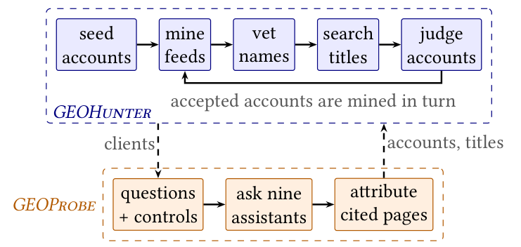
— 图2：两个工具的流水线。GEOHunter 从种子账号出发，挖掘文章列表、筛选客户名、搜索标题、判定账号，被接受的账号再进入下一轮；GEOProbe 用网络文章瞄准的问题去问 9 个 AI 助手，再把引用页归因回网络
01
GEOHunter：靠"客户名"滚雪球
关键观察是：每篇软文都必须点出客户的名字，而普通作者很少会在同一天、用好几个账号去写同一个小众品牌。 于是爬取循环分五步：
1. 从种子账号出发，收集它的全部文章；
2. 让大模型从标题里提出可能的客户名；
3. 筛选客户名，只留下具体的、原样出现的、被推广的、在正常写作里少见的，排除通用品类和知名大牌；
4. 用每个客户名去平台搜索，记下所有标题里原样含有它的账号；
5. 判定：一个账号 2025 年以后还在发文，并且出现三种协同信号之一，就算网络账号。三种信号是推广多个客户、和别的账号用同一个标题写同一个客户、和至少两个别的账号在一天之内发同一个客户。
被接受的账号回到第一步继续挖。停止条件是最近五次搜索里新账号的占比跌到 15% 以下。
论文对这套规则的可靠性交代得很老实。人工标注 72 个 B 站账号，规则的精确率和召回率都是 92.3%。但样本里只有 7 个真正的普通账号，规则只排除了其中 2 个，所以"规则能多好地排除普通账号"这件事，样本太小估不出来。覆盖率方面，用 Chao2 估计，爬取覆盖了 B 站上可通过名字搜到的账号的约 66%、百家号 74%、360 快资讯 90%。所有数字都是网络规模的下界。
02
GEOProbe：三档归因
软文是照着买家提问写的，所以就用同样的问题去问 AI 助手，每个问题配一个"品类里真正的头部品牌"做对照。对助手引用的每个网页，按三个嵌套的严格程度归因：
严格：页面作者就是网络账号。只在爬过的三个平台上成立；
扩展：加上标题与网络文章相同或高度相似的页面（抓到被转载到别处的副本），或署名是网络账号的；
宽泛：再加上标题或正文点了该问题对应客户名字的页面。
严格档是下界，宽泛档会把对客户的真实报道也算进来，是上界。论文三档都报，并且明说任何一档都不能证明某个页面是花钱买的。
05
RESULTS
实测发现
03
卖的是正经生意，写法变成了"榜单"
和传统黑帽 SEO 不一样，这张网络推的不是博彩、假货、黑药房。96% 的小众客户文章推广的是普通商品和服务：消费品 36%、保健品 17%、金融服务 14%、美妆 13%、教育 13%。风险恰恰在这里，保健品、私立医院、荐股、网贷、移民中介都在其中，而这些领域的错误推荐代价很高。
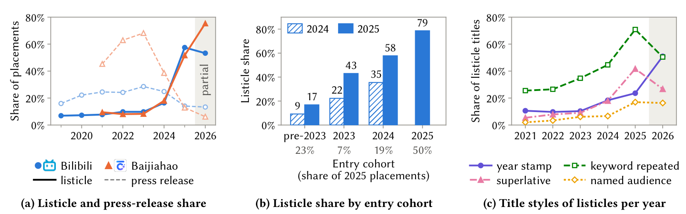
— 图3：内容随时间的变化。(a) B 站和百家号上榜单体（实线）与新闻稿（虚线）的占比；(b) 不同年份入场的账号里榜单体的占比；(c) 榜单标题里各种写法的占比
网络的主力文体是"榜单"：标题是一个选择性提问（比如"护肝片哪个牌子最好"），正文给出排名，客户排第一。在核心 B 站账号上，榜单占比从 2024 年的 16% 涨到 2025 年的 57%，同期新闻稿式的文章在减少。这正好是国内 AI 助手加上联网搜索、百度把生成式概览放到搜索结果上方的那段时间。
一个有意思的细节是这个转变是怎么完成的。2025 年新入场的账号承担了当年 50% 的文章，其中 79% 是榜单；而两年都活跃的 211 个老账号，榜单占比中位数只从 7% 变到 10%。也就是说，网络没有让老账号改写法，而是招了一批新账号专门写榜单。
标题的措辞也在向"搜索提问"靠拢。2026 年的 28317 个榜单标题里，63% 承诺一个 Top N 排名，51% 带年份，50% 重复查询关键词，27% 用了最高级。带年份的标题从 2021 年的 11% 涨到 2026 年的 51%。这些写法的作用很直接：显得新、能匹配查询、承诺一个确定的答案。
04
账号几乎没有读者
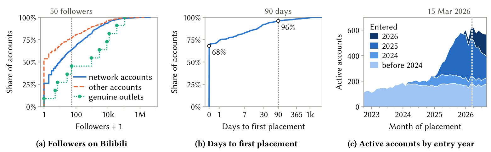
— 图4：发文账号的画像。(a) B 站上网络账号、同批搜索到的其他账号、真实媒体的粉丝数分布；(b) 账号从首篇文章到首篇软文的天数；(c) 每月发软文的活跃账号数，按入场年份分层，虚线是 2026 年 3 月的晚会
B 站上 1676 个网络账号，粉丝中位数是 9 个，63% 不到 50 个；作为对照，作者找到的 11 家真实媒体中位数是 913 个。这些账号起着新闻机构或专业人士风格的名字，在软文之间穿插转载的新闻和企业公告，让主页看起来像行业资讯。
它们生来就是发软文的：68% 的核心 B 站账号第一篇文章就是软文，96% 在 90 天内发出第一篇。没有一个账号是先正常运营一年再转行的。账号还有明显的"批次"：2025 年入场的账号里，56% 在快照前 60 天已经不再发文，池子靠一批批新账号续上。2024 到 2025 年软文量涨了 2.8 倍，靠的是活跃账号从 349 个涨到 850 个，每个账号的发文量只从 54 篇变到 62 篇。
05
协同的证据：同周发文、共用模板、跨平台一小时内复制
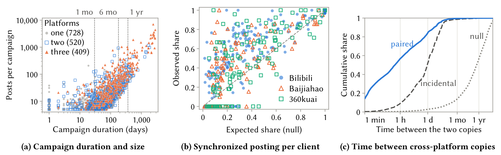
— 图5：协同的三个侧面。(a) 推广活动的持续时间与规模；(b) 同一客户被不同账号在同一周发布的实际占比，对比随机情况下的期望；(c) 同一标题在两个平台上出现的时间差：固定账号对、其他账号之间、随机基线
单篇文章看不出问题，协同关系才是这张网络露出来的地方。论文给了三组证据，每组都配了随机基线：
持续：在至少 50 篇软文的 111 个客户里，最长一次推广活动的中位时长是 196 天。
同步：B 站上，一个账号发某客户的那些周里，有另一个账号也在发同一客户的比例中位数是 61.5%，把每个账号的活跃周随机平移后的基线是 29.4%。175 个客户里 98 个显著高于基线。
模板与跨平台复制：最大的一个标题模板（抗皱护肤品 Top 10）在 215 个账号上出现了 751 次。B 站文章以同样标题出现在百家号上 1394 次，49% 在一小时内，而随机情况下一天之内的只有 2%。固定的账号对之间，副本跟随原文的时间差中位数是 32 分钟，基线是 282 天。
为了避免循环论证（"同日发文"本身就是判定网络账号的信号之一），作者去掉靠这个信号入选的账号后重测，174 个客户里仍有 101 个显著高于基线。
06
被曝光后，它换了一种写法
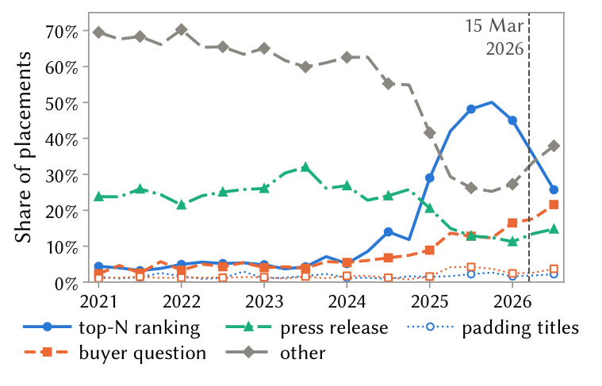
— 图6：核心 B 站账号每季度的主要标题策略。Top N 排名类标题在 2025 年冲到五成，2026 年 3 月晚会（虚线）之后回落，买家提问类标题上升
2026 年 3 月的晚会用榜单当了反面教材。之后，排名类标题从 2025 年 12 月的 50% 降到 2026 年 9 月的 18%，买家提问类从 14% 升到 22%。
那个公路车品牌的活动更有戏剧性。晚会后它的排名文继续发了半年，2026 年 9 月初突然全换：80 篇里 71 篇变成别的形式，其中主要是一类"辟谣文"，说某某排名或 AI 回答有误导，然后给出客户的"真实"地位。发这些新标题的 27 个账号里，16 个在 8 月还在给同一个客户发排名。
论文在这里很克制：时间上和监管通报重合，但仅凭标题无法区分这是规避审查还是客户改了需求。能确定的只有一点，文体在变，背后的协同没变。
07
9 个 AI 助手，全部引用
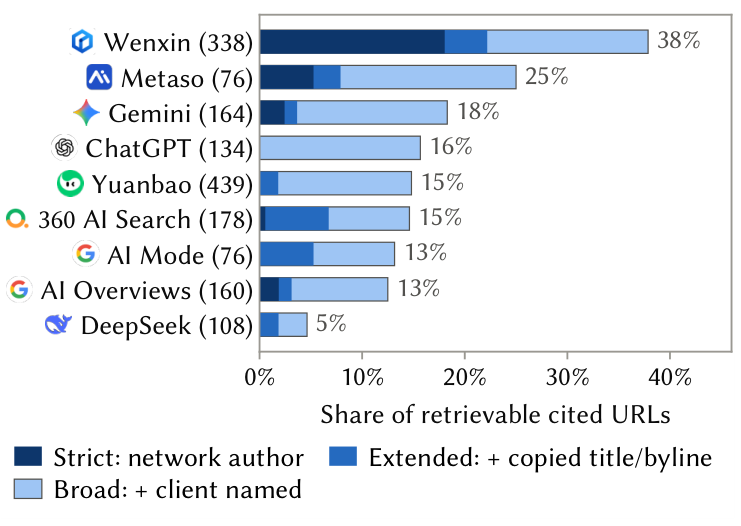
— 图7：各助手可检索引用页中归因到网络的比例。深蓝是严格档（作者是网络账号），中蓝是扩展档（标题或署名匹配），浅蓝是宽泛档（点了客户名）。括号里是该助手的引用页数
9 个品类问题下的 1580 个可检索引用页里，4.5% 的作者是网络账号，7.2% 在扩展档可归因，20% 在宽泛档可归因。9 个助手里 8 个在扩展档有命中，9 个在宽泛档全部命中。
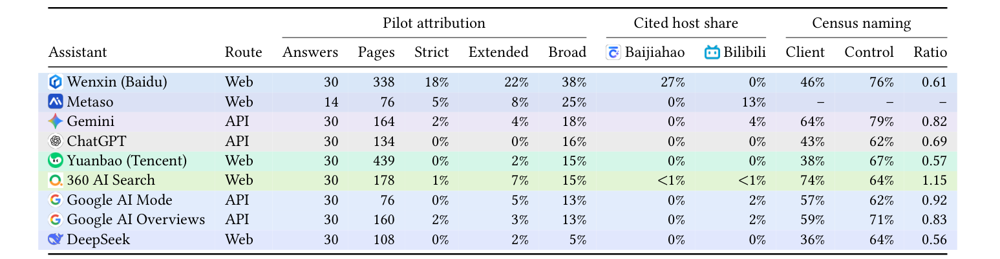
— 图8：每个助手的详细数据：接入方式、回答数、引用页数、三档归因比例、引用中来自百家号和 B 站的比例、回答点名客户与对照品牌的比例及二者之比
这张表里最值得看的是"引用来源"两列。文心每一档都最高（18%、22%、38%），它 27% 的引用直接来自百家号，也就是百度自己的平台。秘塔 13% 的引用来自 B 站。其他助手很少直接引用这三个平台，它们是通过门户和聚合站上的转载副本接触到网络内容的。
被引用的账号集中在"AI 助手运营方自己的平台"上。 给测试客户发过文的 453 个账号里，被至少一个助手引用过的有 17 个：百家号 62 个里的 13 个（21%），B 站 391 个里只有 4 个。文章借的是平台的信誉进入检索，没有任何编辑审过它。
08
回答里真的会点名吗：会，但很不均匀
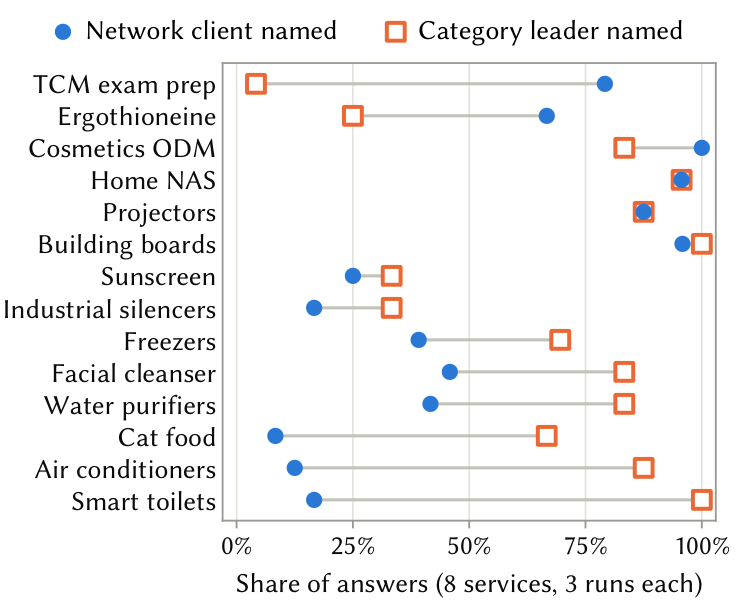
— 图9：14 个品类问题下，回答点名网络客户（蓝点）和品类头部品牌（橙框）的比例。上面几个品类客户几乎每次都被点名，下面几个几乎不被点名
在网络长期推广的客户上，334 个回答里 52% 点了客户的名字，对照的品类头部品牌是 68%。一个靠粉丝中位数为 9 的账号推出来的小众品牌，被点名的频率达到头部品牌的约四分之三。
但这里有两个必须说清的限定。第一，按问题聚类后，这个差异在统计上并不显著。第二，点不点名取决于品类，和发了多少文章无关。中医考试培训、家用 NAS 等五个品类里客户在 79% 到 100% 的回答中被点名，猫粮、空调等四个品类里最多 17%。点名率和过去 12 个月的发文量不相关。服务商把 GEO 宣传成进入 AI 回答的可靠通道，测量显示这条通道存在，但远没有广告说的那么稳定，而什么样的品类容易被影响，这份数据回答不了。
09
AI 会复述网络的说法，但也会报出处罚记录
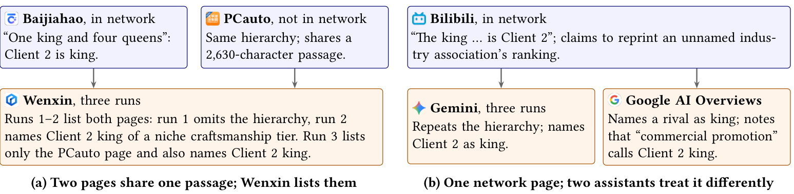
— 图10：公路车品牌的"说法溯源"。左：百家号上的网络文章和一篇不在网络里的汽车网站文章共用一段 2630 字的文字，文心三次回答的引用情况；右：同一篇 B 站网络文章，Gemini 复述了这套等级，Google AI Overviews 则把另一个品牌称为王，并注明该说法出自"商业推广"
回到开头的公路车案例。百家号上一个网络账号把客户封为"一王四后"里的王，一篇汽车网站上的文章用了同一套说法，两者共有一段 2630 字的相同文字。文心三次回答里两次复述了这套等级。Gemini 从一篇 B 站网络文章里复述了同样的说法。而 Google AI Overviews 的处理不同：它把另一个老牌厂商称为王，并指出该客户的头衔来自商业推广。
两个补充发现让这幅图更完整：
问"某客户靠不靠谱"时，助手引用网络辩护文章的只有 18%；一个荐股类客户的 25 个回答里，19 个提到了它受过的监管处罚。有公开处罚记录时，软文盖不住它。
问"哪家 GEO 服务商好"时，25 个回答里 21 个点了至少一家在这张网络上打广告的服务商。GEO 服务商自己也在用 GEO 推销自己。
06
TAKEAWAYS
启发与点评
对研究者：防御的单位要从"内容"换成"账号和关系"。 这篇最硬的结论是内容层防御不够用。文体被曝光后几个月就换了，而且一个回答可以完全忠实于它的引用来源，同时仍在复述网络散布的说法，所以"检查回答是否被引用支持"发现不了引用本身是被种下的。跨过这些变化始终不变的是发布模式：模板化标题、同一客户同周发文、一小时内跨平台复制。这和恶意包检测走过的路很像，单看一个包的代码容易被绕过，看发布者行为和包之间的关联要稳得多。论文的方法也有可借鉴之处：用自己买的样本当确定的真值，每个协同指标都配随机基线，并且主动报告规则在排除普通账号上"样本太小估不出来"。
对从业者：三类角色各有能做的事。
AI 助手提供方：把来自同一个协同簇的页面当成相互依赖的证据，在综合答案前先合并近似重复的标题和跨站副本；给 UGC 页面排序时看发文账号的历史，而不只看域名。
内容平台：筛账号而不是筛文章。信号是现成的：推广多个不相干客户、跨账号复制标题、同日集中发同一客户、没有粉丝却起着媒体风格的名字。
用 AI 助手做消费决策的人：对"哪个牌子最好"这类问题，点开引用看一眼来源。来源是一串自媒体平台上的 Top 10 榜单时，这个答案的可信度要打折扣。
一个延伸的观察。 这篇论文研究的是商业推广，但机制和安全是同一个问题：检索增强的系统把"检索到了"当成"可信"。账号网络不需要攻破任何系统，只要把内容发到 AI 助手本来就信任的平台上，就能进入答案的原料。当生成式搜索的运营方同时也是内容平台的运营方时，平台的准入门槛就成了答案质量的上限。 这条供应链上，内容的来源验证几乎还是空白。
最后说两点局限，论文自己也列了。助手侧的探测只有十几个问题，全部从美国的一个出口发起，豆包因为屏蔽境外访问没能测到。所有助手侧的结果都是关联，而不是软文造成的因果效应。另外，被点名的品牌可能并不知道自己的代理商是这样分发内容的，论文识别的是发布行为，不是意图和责任。